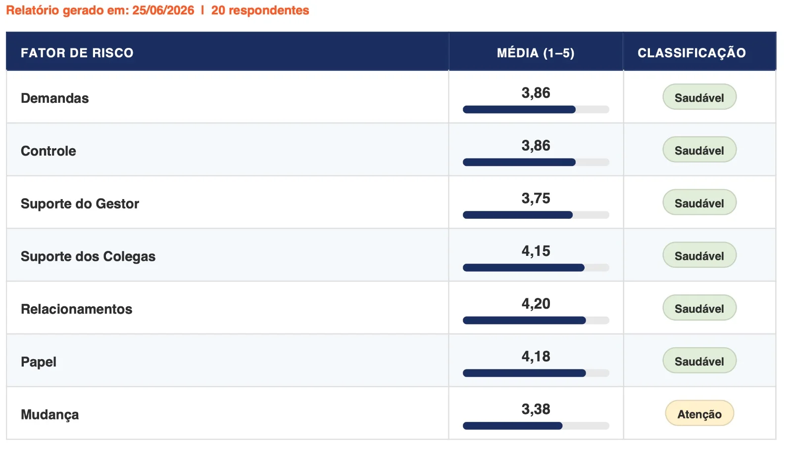

Pare de aplicar a NR-01 no chute. Domine o HSE-IT com o único método validado internacionalmente — e construa relatórios que resistem a auditorias.
Formação de extensão universitária em Avaliação Psicossocial do Trabalho, reconhecida pelo MEC. Você sai com relatório técnico defensável, 2 créditos HSE e 1 ano de acesso pra aplicar.
O que uma NR-01 mal feita custa de verdade
Uma multa por descumprimento da NR-01 começa em R$ 6.704. Contratar uma consultoria pontual pra resolver isso custa de R$ 3.000 a R$ 15.000 — e você paga de novo a cada nova avaliação, porque não aprendeu o método, só comprou o resultado uma vez.
| Fazer sozinho | Contratar | Formação HSE-IT | |
|---|---|---|---|
| Custo | "Grátis" + seu tempo | R$ 3.000 a R$ 15.000+ | R$ 490 |
| Base metodológica | Improviso | Depende do consultor | Autorizada HSE (UK) |
| Relatório defensável | Frágil, questionável | Só naquele projeto | Com base técnica validada |
| Certificação | Nenhuma | Você não recebe | MEC — 60h |
| Método que você domina | Improviso repetido | Consultor sabe. Você não. | Seu — para toda a carreira |
Com o primeiro cliente ou a primeira aplicação interna, o investimento já se paga. Do segundo em diante, é economia ou é lucro — depende de como você usa.
Formação completa. Acesso real. Resultado imediato.
60h certificadas — MEC
Extensão universitária reconhecida. Certificado válido em editais, auditorias e processos de habilitação profissional.
2 créditos HSE inclusos
Exclusivos para o protocolo HSE-IT, válidos por 1 ano. Aplique em 2 organizações reais durante a formação, sem custo adicional.
Software Gestor NR-01 incluso
Ferramenta para estruturar e documentar o Programa de Gerenciamento de Riscos conforme a NR-01 atualizada.
Relatório técnico defensável
Gerado automaticamente pela plataforma. Pronto para auditoria, fiscalização e devolutiva ao cliente — sem planilha paralela.
Curso 100% gravado
Acesso imediato após a confirmação. Assista quando e quantas vezes quiser, no seu ritmo — sem depender de horário de turma.
Apostila completa incluída
Todo o conteúdo do curso em material de apoio, pra consultar sempre que precisar — durante o curso e depois, na hora de aplicar.
Suporte por IA
Agente de IA disponível pra esclarecer dúvidas na hora, sem esperar retorno de instrutor. Você não trava sozinho no meio do aprendizado.

Isso é um relatório real, gerado por um aluno formado
Não é print de sistema, é a saída real da plataforma: classificação automática por dimensão, sem cálculo manual, sem planilha, sem interpretação subjetiva.
Em menos de uma semana depois de formado, esse aluno já tinha um relatório técnico pronto pra apresentar a um cliente — o mesmo prazo que você vai ter.
Conteúdo Programático Completo
3 módulos · 30 horas de formação estruturada
Pilar 1 — Compreensão, Confiança e Legitimidade
- Evolução da Saúde Ocupacional: do modelo biomédico ao biopsicossocial
- Riscos psicossociais no trabalho: definição, impacto e legislação
- Origem do HSE-IT: desenvolvimento pela Health and Safety Executive (UK)
- Bases científicas e reconhecimento internacional da ferramenta
- O papel do HSE-IT na gestão preventiva moderna
- Aplicações práticas em diferentes contextos organizacionais
Pilar 2 — Funcionamento Interno e Lógica da Ferramenta
- O construto central do HSE-IT: riscos psicossociais como fenômeno organizacional
- O que o HSE-IT mede e o que não mede (limites e escopo)
- Estrutura geral do instrumento: 35 itens e 7 dimensões
- As 7 dimensões: Demanda, Controle, Suporte do Gestor, Suporte dos Colegas, Relacionamentos, Papel, Mudança
- Escala de medição, pontuação e lógica dos dados
- Benchmarks e interpretação de zonas de risco
- Análise sistêmica e cruzamento de indicadores
Pilar 3 — Competência, Decisão e Ação
- Como aplicar corretamente o HSE-IT: metodologia e boas práticas
- Cuidados metodológicos e éticos na coleta de dados
- Leitura e interpretação de resultados: padrões, contexto e narrativa
- Erros mais comuns na interpretação e como evitá-los
- Transformando resultados em planos de ação estratégicos
- Priorização de intervenções primárias (causa-raiz)
- Integração do HSE-IT com indicadores de RH e Saúde Ocupacional
- Casos práticos e aplicações reais em diferentes setores
Modelo do certificado · 60h · Reconhecimento MEC via Anhanguera/Pitágoras Unopar
Pronto para dominar o método correto de avaliação psicossocial? → Garantir minha vaga
Do acesso à primeira aplicação real
1. Inscrição e acesso imediato
100% online, no seu ritmo. Você começa assim que a confirmação de pagamento chega.
2. Formação estruturada — 60h
Fundamentos do HSE-IT, estrutura do protocolo e aplicação prática das 7 dimensões com estudo de caso.
3. Aplicação com os 2 créditos HSE
Você aplica em 2 organizações reais durante a formação, sem custo adicional, usando a Plataforma CVAT.
4. Certificado MEC
Emitido ao final com a carga horária completa. Válido para habilitação profissional e editais.
Clóvis Soler
Autor da metodologia HSE-IT no Brasil
Especialista em avaliação psicossocial do trabalho, membro oficial da COPSOQ Network e referência nacional na aplicação do HSE-IT em conformidade com a NR-01. Atua há mais de uma década formando profissionais e estruturando diagnósticos psicossociais defensáveis em empresas de todos os portes.
Formou mais de 1.000 profissionais e atende empresas de todos os portes, do empreendedorismo às maiores corporações do Brasil.
Essa formação é pra quem precisa fazer certo — não só cumprir tabela
Faz sentido pra você se
- ✓ Você é profissional de RH, SST, consultor ou engenheiro de segurança e quer oferecer avaliação psicossocial com metodologia validada
- ✓ Você é empresário e quer parar de depender de consultoria externa a cada nova avaliação
- ✓ Você quer usar o certificado como diferencial em propostas e editais
Não faz sentido se
- ✗ Você só quer "cumprir tabela" com o menor esforço possível
- ✗ Você não pretende aplicar o instrumento de verdade, nem internamente nem com clientes
Pronto para dominar o método correto de avaliação psicossocial?
Referência: uma consultoria pontual custa de R$ 3.000 a R$ 15.000 — e você paga de novo a cada avaliação.
Perguntas frequentes
CVAT Brasil Treinamentos e Consultoria LTDA · CNPJ 18.574.831/0001-32 · Política de Privacidade · Termos de Uso